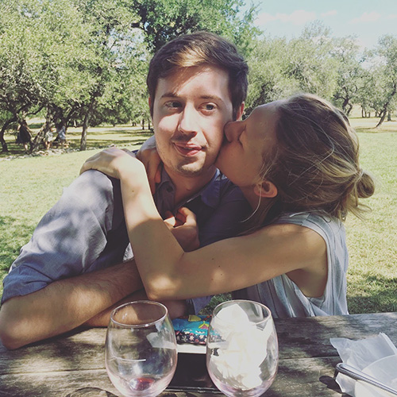
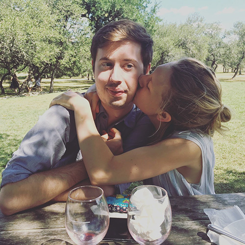

Details
Mayfield Park and Nature Preserve,
West 35th Street, Austin, TXRegistry
Our Zola Wedding RegistryOur Story

 

How we met
Abby and Logan met in September of 2015 when fate would have them both moving to a new city after graduating college to take a job at IBM in Austin, TX. During an after work happy hour one evening, Abby and Logan were introduced: Abby in purple pants and Logan in a plaid button up. Over the course of their three month long training program at IBM, Abby and Logan became fast friends in and outside of the office. They would spend evenings and weekends together exploring the city on bikes, seeing live music, learning to rock climb, and swimming in Austin’s natural springs.
Just two months after meeting, Abby and Logan went on a late night first date to Kerbey Lane - a delicious dinner where they ate queso and pancakes in glee. Logan would argue that their first date was at Mozart’s Coffee Roasters after Abby made a public Facebook post inviting a group of acquaintances to join her at the coffee shop one Saturday evening. Hours after posting, Logan showed up on his bike just minutes before Abby’s parking meter was to expire. Between that evening at Mozart’s and Kerbey Lane, Abby & Logan knew their connection was rather instant and impossible to disrupt.
Since then, Abby and Logan have continued to find new things in Austin to discover, ride their bikes through the heat of the summer, learn some dance moves, develop their careers, travel frequently, and deepen their connections with friends and family.
After 8 years together, they cannot wait to celebrate with all of you on November 3rd, 2023!

Favorite Memories
2016
In March of 2016, Abby and Logan traveled with friends to Banff, Canada to snowboard. Abby had assured Logan that she knew how to snowboard because she had experience on ski hills in Minnesota. It quickly became evident on their first run down the mountain that Abby’s skills were minimal. Thanks to Logan’s patience and positive encouragement, they made it down the mountain together…four hours later.

2017
In 2017, Abby and Logan made the decision to move in together in an apartment next to Barton Springs Pool. They took advantage of the location by jumping into Barton Springs at night to cool off from the extreme summer heat, walking to Austin City Limits music festival, biking to the IBM office, and more. To this day, Abby and Logan hold the Zilker neighborhood near and dear to their heart.

2018
In 2018, Abby and Logan took several trips with family and friends to New Orleans, Bozeman, San Antonio, Baltimore, and on a Caribbean Cruise.

2019
In September of 2019, Abby and Logan took their first international trip together to Ireland. They rented a car, and over the course of 2 weeks, took a road trip along the Wild Atlantic coast and explored many Irish cities.
In October of 2019, Abby and Logan bought their first home in Austin, TX and moved in before the December holidays.

2020
In 2020, partly due to the pandemic but mostly due to Abby’s busy mind, they dove into home improvement projects, fostered a dog, raised 6 chickens (3 remaining today), and adopted their adored cat - Merlin. They kept busy with new and old hobbies (cooking, gardening, camping, and skating) and visiting their cousins in Houston.


2021
In 2021, Abby and Logan left their jobs at IBM. Logan began working at H-E-B Digital as an Engineer and recently was promoted to Engineer Manager. Abby began working at Procore Technologies as a User Experience Designer after taking a stint to expand her education in Social Innovation.
Making due in the pandemic on Abby’s 28th birthday, they take a trip to South Padre with a couple of friends to experience the Texas Coast. They spent the weekend walking the beach, completing a puzzle, skating, and bird watching.
In the summer of 2021, Abby and Logan took a canoe and backpacking trip through the boundary waters in Northern Minnesota. Although camping was not something new to them, canoeing for several miles and portaging was. With Logan’s incredible ability to navigate the waters and a compass, they completed the route and it is now one of their favorite experiences together.
2022
In 2022, Abby and Logan take another summer trip to escape the Texas heat. As Logan’s first time in New England, they explored Boston, Cambridge, Burlington, Portland, and Montreal, and Acadia National Park, and places in between. Little did Abby know but this trip is when Logan wanted to propose but the ring wasn’t ready just yet.
The Proposal
On August 31, 2022, Abby came home from work around 5:00 pm - earlier than Logan expected - and listened to Logan shuffle in the house for a few minutes before she was allowed inside. Logan had proposed in their first home together with candles and flowers.